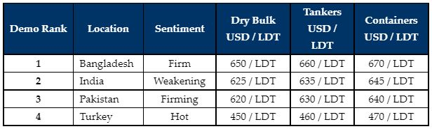

inWeekly Demolition Reports14/03/2022

Markets have endured another boost off the back of surging commodity prices and there is every expectation that the USD 700/LDT mark will be imminently breached in the sub-continent markets once again.
These are comfortably (and certainly) the highest numbers we have seen since the historical highs of 2008, when over USD 800/LDT was surpassed and the recent universal skyrocketing steel plate prices across the recycling board (even in China) are carrying the weight of these recent prices.
The chief movement is coming from a rampant Bangladeshi market where steel prices continue to surge upwards (some of the most noteworthy increases of late), in line with soaring commodities in general, as the Russian invasion of Ukraine intensifies into an uncertain future.
Even in India, after two weeks of spectacular gains and despite registering further gains this week, steel prices had a minor correction during the course of the week, raising the guard of local recyclers who have been observing the rate of the recent climb. It may however be that prices continue their upward trajectory in Alang next week again, only to mirror global commodity prices moving upwards / forward.
Pakistan has also started to also improve once again, having missed several geographically positioned vessels that have since been diverted to competing shores.
On the Far end, the Turkish market, like the Bangladeshi market, recorded some impressive gains in local steel plate prices this week, pushing vessel prices into unchartered territory, and certainly worthy of exploiting on quick deliveries.
It remains to be seen just where the first transactions on market tonnage will be concluded at or above USD 700/LDT, as End Buyers do seem somewhat nervous to transact at these new decade long highs.
For week 10 of 2022, GMS demo rankings / pricing for the week are as below.

📄 Download PDF: 2022-03-13iKJ_org.pdf
Source: GMS,Inc. ,https://www.gmsinc.net/gms_new/index.php/web